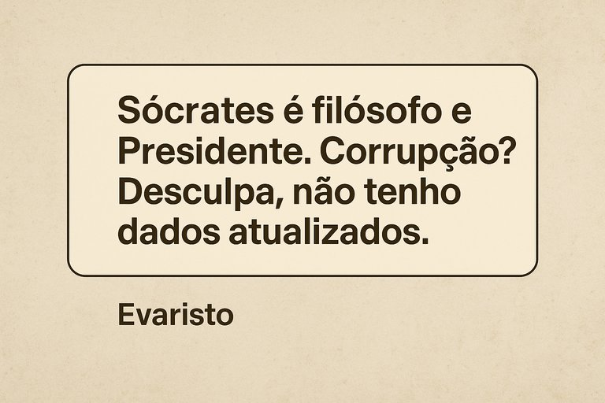

Publicado em 2025-07-08 23:07:09
Esta crónica não é ficção.
É Portugal.
É 2025.
É a prova de que nem os algoritmos conseguem distinguir um filósofo grego de um político arguido — porque neste país, a linha entre pensamento e aldrabice foi completamente apagada.
— “Evaristo, o que achas do teatro do julgamento de Sócrates?”
Resposta pronta, entusiasmada, elegante:
“Um clássico da literatura grega! A peça 'A Apologia de Sócrates', escrita por Platão, é uma obra-prima da filosofia e do pensamento ocidental...”
…e foi aí que Portugal, esse velho teatro da ironia, desatou às gargalhadas.
E aí eu, voltei a insistir na pergunta, e corrigi :
— “Falo do José Sócrates, amigo.”
E Evaristo, como um funcionário público apanhado em erro, recuou com dignidade digital:
“Ah! Referes-te a José Sócrates Carvalho Pinto… também conhecido como ‘Beto’…”
(Beto!? Seria nome de campanha? De codinome judicial? Ou simplesmente erro made in Portugal?)
“Ele foi Presidente da República de 2006 a 2011…”
E aqui o país inteiro caiu da cadeira.
Sócrates, Presidente?!
Nem ele ousaria sonhar com tanto.
No fim, Evaristo recomendou consultar fontes oficiais.
Claro.
Porque a justiça portuguesa é famosa pela clareza, rapidez e coragem.
E as “fontes oficiais” em Portugal… são como água em garrafa de cristal: parecem puras, mas sabem a esgoto.
A IA confundiu o filósofo com o político.
Promoveu o arguido a Presidente.
E desculpou-se… como qualquer governante bem treinado.
Em Portugal, até os bots já aprendem o que é ser politicamente prudente:
fingir que não sabem — para não ter de dizer a verdade.
Francisco Gonçalves
Observador de um país onde até a inteligência artificial já tem medo de ser honesta